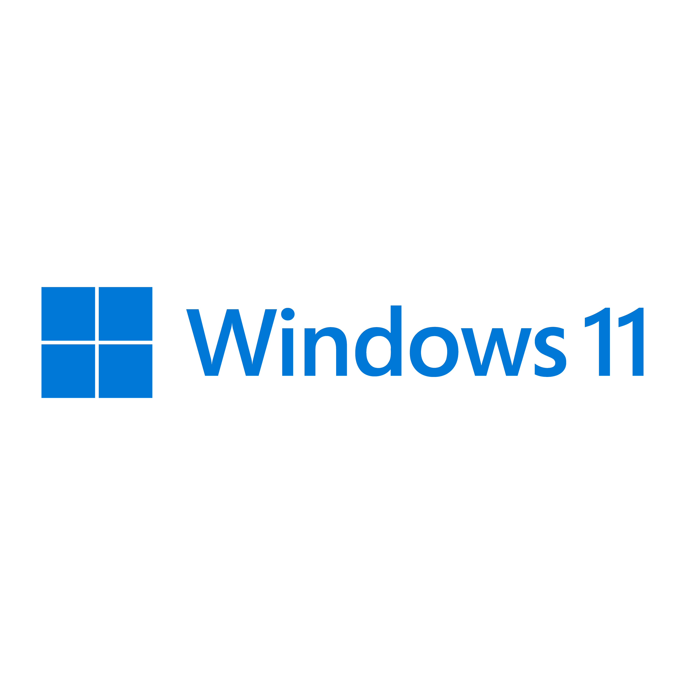
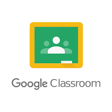

Windows
Aprenda diferentes métodos para capturar telas no Windows, usando teclas de atalho ou ferramentas nativas.
Ver TutoriaisAndroid
Conheça os métodos para capturar telas em diferentes modelos de smartphones e tablets Android.
Ver Tutoriais

Google Classroom
Saiba como anexar suas capturas de tela em atividades do Google Classroom de forma rápida e fácil.
Ver Tutoriais